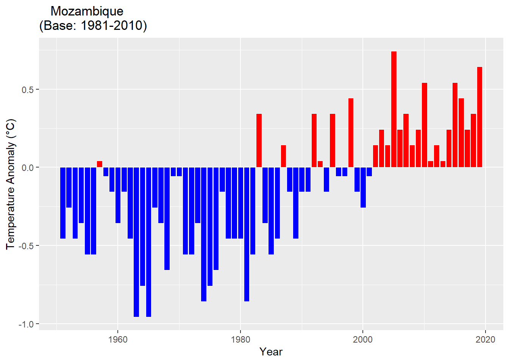

Chapter 5 Impacts, vulnerabilities and risks (short-, medium- and long term)
5.1 Framework for national adaptation to guide assessment of vulnerabilities and risks
- Conceptual framework of vulnerability and risk at various levels: national, system level, local level, etc.
ICAT (Quadro fortalecido da Transparencia) - Boundary conditions for the assessment
- Focus on key systems/sectors
- Synergy with SDGs, Sendai Framework for DRR, and other relevant regional and national frameworks
5.2 Baseline climate based on 1981-2010
5.2.1 National
5.2.2 Cabo Delgado
5.2.3 Sofala
5.2.4 Gaza
5.2.5 Inhambane
5.2.6 Manica
5.2.7 Maputo
5.2.8
5.2.9 Nampula
5.2.10 Nassa
5.2.11 Tete
5.2.12 Zambezia
5.3 Temperature Anomaly


5.4 Current impacts, vulnerabilities and risks
Dados históricos sobre eventos extremos mostram que três riscos relacionados com o clima são mais prováveis de ocorrer em Moçambique, a saber, ciclones tropicais, inundações e secas. Estes eventos são frequentemente associados a danos socioeconómicos, traduzidos em perdas de vidas humanas, sofrimento humano, perda de bens, destruição de infraestruturas críticas (ex. unidades sanitárias, escolas, vias de acesso, etc.) e outras perdas indirectas. Uma análise de dados no período de 1980 a 2019 mostra que Moçambique foi afectado por 21 ciclones tropicais, 20 eventos de inundação e 12 secas (figura 3.1). Isto significa que em média, o país é afectado por um ciclone tropical ou um evento de inundação a cada dois anos e um evento de seca a cada três anos. Os ciclones tropicais e os eventos de inundações representam cerca de 77% do total dos eventos ocorridos no período em análise.

Figura 3.1:-Número total de eventos extremos ocorridos em Moçambique, entre 1980 – 2019
(Fonte: produzido com base nos dados do DeSinventar e relatórios do INGC de balanço da época chuvosa).
Uma das questões cruciais da actualidade é se existe alguma evidência do aumento ou não dos eventos extremos causadores de desastres. Através de uma análise da tendência dos eventos registados nas últimas quatro décadas (1980 – 2019), nota-se que o número de eventos que assolaram o país aumentou, significativamente, desde a década 2000 (figura 3.2). Desde a década de (2000-2010) até à corrente, o número de ciclones concorre com o número de eventos de inundação, apesar do abrandamento dos eventos de seca. Tomando em conta que os ciclones tropicais são frequentemente associados a eventos de chuvas fortes que podem contribuir com uma proporção significativa da precipitação em um período muito curto que por sua vez causam inundações em várias regiões do país, com sérias implicações para a saúde das comunidades, o agravamento destes fenómenos nas últimas décadas deve merecer uma atenção especial para as autoridades da saúde e não só.

Figura 3.2: Tendência do número de eventos extremos ocorridos entre 1980 e 2019.
O impacto directo destes eventos é frequentemente expresso pelo número da perda de vidas humanas, pessoas afectadas através da perda de bens pessoais e meios de subsistência, destruição de infra-estruturas críticas do país tais como estradas, pontes, sistema de abastecimento de água, escolas, hospitais, assim como a eclosão de doenças transmitidas pela água (ex. malária, cólera, diarreias etc.). Todavia, a falta de registos sistemáticos e homogéneos dos eventos e seus impactos e, por um lado, a persistência em se considerar apenas os desastres de grandes proporções e elevado impacto num curto espaço de tempo, têm ocultado milhares de desastres de pequena e média escala que ocorrem todos os anos no país. Consequentemente, Moçambique não conhece o valor real das perdas económicas directas e ou indirectas associadas a estes eventos.
A Tabela 3.1 apresenta o impacto das mudanças climáticas na dimensão humana. Relativamente aos impactos económicos, estes são apresentados nos respectivos sectores onde é feita a análise da vulnerabilidade.
Época Chuvosa | Evento | Afectados | ...4 | Pessoas | ...6 | ...7 | ...8 |
Famílias | Pessoas | Desapa-recidas | Desloca-das | Feridas | Óbitos | ||
1999/2000 | Ciclone HUDAH, chuvas e cheias | 2035300 | 491317 | 699 | |||
2005/6 | Tempestades, chuvas intensas e inundações | 36262 | 29 | 30 | |||
2006/7 | Ciclone Favio | 17999 | 115 | 7 | |||
Cheias e Inundações | 176529 | ||||||
Seca | 119578 | ||||||
2007/8 | Ventos Fortes, Chuvas e Inundações | 11870 | 3 | ||||
Cheias | 102486 | 20 | |||||
Ciclone JOKWE | 201695 | 41 | 13 | ||||
2008/9 | |||||||
2009/10 | Cheias | 7523 | |||||
2010/11 | Ventos fortes | 18563 | 43 | ||||
Cheias | 118528 | ||||||
2011/12 | Depressão Tropical Dando, Ciclone Tropical FUNSO e Tempestade Tropical Irina | 119826 | 76 | 58 | |||
2012/13 | Ciclone Tropical HARUNA, | 38176 | 12 | 23 | |||
2013/14 | Chuvas e ventos fortes, cheias e inundações | 11813 | 52746 | 76 | 30 | ||
2014/15 | Cheias e Inundações | 408711 | 151 | 163 | |||
2015/16 | |||||||
2016/17 | Chuvas e Ventos Fortes | 88798 | 266 | ||||
Descargas atmosféricas | 28 | 23 | |||||
Cheias e Inundações | 414922 | ||||||
Ciclone DINEO | 550959 | 91 | 7 | ||||
2017/18 | 152246 | 5 | 61 |
Os eventos climáticos extremos ocorridos em Moçambique em 2000 e nas épocas chuvosas de 2005/6 a 2017/18 afectaram cerca de 4,074,606 pessoas, causaram ferimentos a 885 pessoas e 1,114 óbitos. Cerca de 50% de afectados, feridos e óbitos resultaram da ocorrência do Ciclone HUDAH, e importa referir que os ciclones tropicais são eventos que provocam maiores impactos na dimensão humana. Estes impactos constituem um retrocesso no processo de redução da pobreza que é a prioridade dos Governos dos países em vias de desenvolvimento e aumentam a dependência pela ajuda internacional. Neste contexto, é de alta prioridade a avaliação da vulnerabilidade dos sectores sociais e económicos mais importantes e a identificação de medidas de adaptação.
Agricultura
De acordo com os balanços das épocas chuvosas, o sector de agricultura é vulnerável aos eventos de estiagem e secas, cheias e inundações, ventos fortes, ciclones tropicais incluindo pragas (vide a Tabela 3.3). Estes eventos resultam em áreas de culturas afectadas e/ou perdidas; morte e/ou desaparecimento de animais domésticos, com destaque para o gado bovino, caprino, suíno, ovino e aves; destruição de infra-estruturas agrárias e de maneio dos animais; perda de áreas de pastagem, afectando os agricultores e suas famílias. Tabela 3.3: Impacto das mudanças climáticas na agricultura
Época Chuvosa | Evento | Local | Impactos |
Chuvas intensas e inundações | · | ||
· | |||
2012-13 | Inundações | Cidade e província de Maputo, Gaza, Inhambane, Manica, Sofala, Tete e Zambézia | · Afectadas 229,470ha de culturas, das quais 168,511ha foram perdidos; |
· Morte por arrastamento de 21 cabeças de gado, 2 burros e 4 cabeças de gado suíno, em Inhambane. | |||
Estiagem | províncias de Maputo e Inhambane | · 37,228ha de culturas afectadas e perdidas. | |
Praga | Tete | · 324ha de culturas afectados e perdidos. | |
Inundações, estiagem e pragas | cidade e província de Maputo, Gaza, Inhambane, Manica, Sofala, Tete e Zambézia. | · Afectaram 182,281 produtores. | |
2013-14 | Chuvas | Maputo província, Gaza, Inhambane, Sofala, Zambézia, Niassa e Cabo Delgado. | · Afectados 45,689ha, correspondentes a 1.1% de área semeada, sendo que 14,495ha foram perdidos. Afectando 24,989 famílias |
2014-15 | Chuvas irregulares e estiagem | Sofala, Inhambane, Gaza e Maputo. | · Afectados 56,126 ha correspondendo a cerca de 1% da área total semeada com culturas diversas e cerca de 38,000 produtores. |
Excesso de chuvas e as inundações | Niassa, Cabo Delgado, Nampula, Zambézia, Sofala, Manica, Tete, Gaza e Maputo | · Afectados 115,234 ha correspondendo a cerca de 2% da área total semeada com culturas diversas; | |
· 07 Represas afectadas na província da Zambézia; | |||
· Morte de 138 bovinos, 29 caprinos, 13 suínos e 132 aves; | |||
· Danificadas diversas infra-estruturas de maneio, nomeadamente 01 pocilga, 07 tanques carracicidas, 01 curral de bovinos e caprinos, 03 aviários e 1 armazém. | |||
· Alagadas extensas áreas de pastagem reduzindo assim a área ideal de pastagem por animal. | |||
2016-17 | Inundações | Sofala, Inhambane, Manica, Gaza e Maputo, | · Afectados 47,755ha de culturas e um universo de 46,063 produtores. |
Ciclone tropical DINEO | Inhambane | · Afectados 18,861ha e 15,050 produtores. | |
2017-18 | Inundações | · Afectados 274,742ha de cultura. | |
Estiagem | · Afectados e perdidos 223,502ha de culturas. | ||
Pragas | · Afectados 41,975ha de culturas. |
Fonte: Balanços das épocas chuvosas do período de 2011-12 a 2017-18
Os eventos climáticos ocorridos no país entre as épocas chuvosas de 2011-12 a 2017-18 afectaram cerca de 1,384,677 ha de culturas, dos quais cerca de 733,270 ha foram perdidas. Os eventos que afectaram maior área de culturas foram a depressão tropical Dando e o ciclone tropical Funso, ocorridos na época chuvosa 2011-12, enquanto a maior perda de culturas ocorreu na sequência das inundações de 2012-2013.
Para além de áreas afectadas e/ou perdidas de culturas, os eventos climáticos ocorridos no país causaram morte de 315 cabeças de gado bovino, 2,707 de caprinos, 254 suínos, 111 ovinos e 132 aves. Em termos de equipamentos, 9 represas e 113 motobombas foram danificados. Estas perdas e destruições afectaram 278,394 produtores e cerca de 25 mil famílias.
Os eventos que mais perdas e destruições causam no sector de agricultura são os relacionados com excessos de chuvas e inundações e os ciclones tropicais. Contudo, quando ocorre uma estiagem, normalmente, a área afectada é igual a perdida.
É importante sublinhar também que além da vulnerabilidade biofísica associada à ocorrência de eventos climáticos extremos, os níveis de tecnologia adoptados por grande parte dos produtores não correspondem às exigências das variedades seleccionadas, devido à fraca capacidade financeira para aquisição de insumos agrícolas, o que também contribui para a baixa produção e produtividade.
Para a avaliação da vulnerabilidade do sector agrícola às mudanças climáticas foi seleccionada a cultura de milho produzida em sequeiro, no distrito de Chókwé, província de Gaza. A avaliação consistiu na análise da relação entre o rendimento da cultura e as variáveis climáticas (precipitação e temperatura) e feita a projecção das variáveis climáticas e seus possíveis impactos nos rendimentos.
Pecuária
Tabela 3.4: Impactos dos eventos extremos na pecuária
Época Chuvosa | Evento | Local | Impactos |
Chuvas intensas e inundações | · | ||
· | |||
2012-13 | Inundações | Cidade e província de Maputo, Gaza, Inhambane, Manica, Sofala, Tete e Zambézia | · Afectadas 229,470ha de culturas, das quais 168,511ha foram perdidos; |
· Morte por arrastamento de 21 cabeças de gado, 2 burros e 4 cabeças de gado suíno, em Inhambane. | |||
Estiagem | províncias de Maputo e Inhambane | · 37,228ha de culturas afectadas e perdidas. | |
Praga | Tete | · 324ha de culturas afectados e perdidos. | |
Inundações, estiagem e pragas | cidade e província de Maputo, Gaza, Inhambane, Manica, Sofala, Tete e Zambézia. | · Afectaram 182,281 produtores. | |
2013-14 | Chuvas | Maputo província, Gaza, Inhambane, Sofala, Zambézia, Niassa e Cabo Delgado. | · Afectados 45,689ha, correspondentes a 1.1% de área semeada, sendo que 14,495ha foram perdidos. Afectando 24,989 famílias |
2014-15 | Chuvas irregulares e estiagem | Sofala, Inhambane, Gaza e Maputo. | · Afectados 56,126 ha correspondendo a cerca de 1% da área total semeada com culturas diversas e cerca de 38,000 produtores. |
Excesso de chuvas e as inundações | Niassa, Cabo Delgado, Nampula, Zambézia, Sofala, Manica, Tete, Gaza e Maputo | · Afectados 115,234 ha correspondendo a cerca de 2% da área total semeada com culturas diversas; | |
· 07 Represas afectadas na província da Zambézia; | |||
· Morte de 138 bovinos, 29 caprinos, 13 suínos e 132 aves; | |||
· Danificadas diversas infra-estruturas de maneio, nomeadamente 01 pocilga, 07 tanques carracicidas, 01 curral de bovinos e caprinos, 03 aviários e 1 armazém. | |||
· Alagadas extensas áreas de pastagem reduzindo assim a área ideal de pastagem por animal. | |||
2016-17 | Inundações | Sofala, Inhambane, Manica, Gaza e Maputo, | · Afectados 47,755ha de culturas e um universo de 46,063 produtores. |
Ciclone tropical DINEO | Inhambane | · Afectados 18,861ha e 15,050 produtores. | |
2017-18 | Inundações | · Afectados 274,742ha de cultura. | |
Estiagem | · Afectados e perdidos 223,502ha de culturas. | ||
Pragas | · Afectados 41,975ha de culturas. |
5.5 Projected future impacts, vulnerabilities and risks
Em Moçambique, alguns estudos apontam para um aumento significativo para a temperatura, sendo que a temperatura média anual está projectada para aumentar entre 1.0 a 2.8 °C por volta de 2060 e entre 1.4 a 4.6 ° C em 2090 (INGC, 2009; Mcsweeney et al., 2010) (igura 1.10). A taxa projectada de aquecimento será mais rápida nas regiões interiores de Moçambique do que nas áreas mais próximas da costa. Todas as projecções indicam aumentos substanciais na frequência de dias e noites considerados “quentes” no clima actual. Sendo que este aumento estará entre 17 e 35% de dias por ano, por volta de 2060 e entre 20 e 53% de dias por ano em 2090. As mesmas projecções indicam também uma redução na frequência de dias e noites consideradas “frias” no clima actual.
5.5.1 Temperature

Figura 1.10: Tendências da temperatura média anual em Moçambique para o passado recente entre 1960 e 2006 (linha em preto) e o futuro projectado para três cenários de emissões (linhas coloridas). As barras coloridas no lado direito indicam os diferentes cenários usados nas simulações (A2, A1B e B1) assim como as faixas de incertezas nas projecções de climas médios por volta de 2090 – 2100 (Adaptado de Mcsweeney et al., 2010).
5.5.1.1 ssp245

Fig. 4a. Mean temperature change (C) for Mozambique for 2020 – 2040 compared to reference period 1971 – 2000 for the medium emissions scenario (ssp245). BCC-CSM2-MR Model

Fig. xx Mean temperature change (C) for Cabo Delgado for 2021 – 2040 compared to reference period 1971 – 2000 for the medium emissions scenario (ssp245). BCC-CSM2-MR Model

Fig. xx Mean temperature change (C) for maputo for 2021 – 2040 compared to reference period 1971 – 2000 for the medium emissions scenario (ssp245). BCC-CSM2-MR Model

Fig. xx Mean temperature change (C) for Gaza for 2021 – 2040 compared to reference period 1971 – 2000 for the medium emissions scenario (ssp245). BCC-CSM2-MR Model

Fig. xx Mean temperature change (C) for Inhambane for 2021 – 2040 compared to reference period 1971 – 2000 for the medium emissions scenario (ssp245). BCC-CSM2-MR Model

Fig. xx Mean temperature change (C) for Manica for 2021 – 2040 compared to reference period 1971 – 2000 for the medium emissions scenario (ssp245). BCC-CSM2-MR Model

Fig. xx Mean temperature change (C) for Maputo for 2021 – 2040 compared to reference period 1971 – 2000 for the medium emissions scenario (ssp245). BCC-CSM2-MR Model

Fig. xx Mean temperature change (C) for Maputo City for 2021 – 2040 compared to reference period 1971 – 2000 for the medium emissions scenario (ssp245). BCC-CSM2-MR Model

Fig. xx Mean temperature change (C) for Nampula for 2021 – 2040 compared to reference period 1971 – 2000 for the medium emissions scenario (ssp245). BCC-CSM2-MR Model

Fig. xx Mean temperature change (C) for Nassa for 2021 – 2040 compared to reference period 1971 – 2000 for the medium emissions scenario (ssp245). BCC-CSM2-MR Model

Fig. xx Mean temperature change (C) for Tete for 2021 – 2040 compared to reference period 1971 – 2000 for the medium emissions scenario (ssp245). BCC-CSM2-MR Model

Fig. xx Mean temperature change (C) for Zambezia for 2021 – 2040 compared to reference period 1971 – 2000 for the medium emissions scenario (ssp245). BCC-CSM2-MR Model
5.5.1.2 ssp585

Fig. 4b. Mean temperature change (C) for Mozambique for 2021 – 2040 compared to reference period 1971 – 2000 for the high emissions scenario (585). BCC-CSM2-MR Model.

Fig. 4b. Mean temperature change (C) for Cabo Delgado for 2020 – 2040 compared to reference period 1971 – 2000 for the high emissions scenario (585). BCC-CSM2-MR Model.

Fig. 4b. Mean temperature change (C) for maputo for 2021 – 2040 compared to reference period 1971 – 2000 for the high emissions scenario (585). BCC-CSM2-MR Model.

Fig. xx Mean temperature change (C) for Gaza for 2021 – 2040 compared to reference period 1971 – 2000 for the high emissions scenario (ssp585). BCC-CSM2-MR Model

Fig. xx Mean temperature change (C) for Inhambane for 2021 – 2040 compared to reference period 1971 – 2000 for the high emissions scenario (ssp585). BCC-CSM2-MR Model

Fig. xx Mean temperature change (C) for Manica for 2021 – 2040 compared to reference period 1971 – 2000 for the high emissions scenario (ssp585). BCC-CSM2-MR Model

Fig. xx Mean temperature change (C) for Maputo for 2021 – 2040 compared to reference period 1971 – 2000 for the high emissions scenario (ssp585). BCC-CSM2-MR Model

Fig. xx Mean temperature change (C) for Maputo City for 2021 – 2040 compared to reference period 1971 – 2000 for the high emissions scenario (ssp585). BCC-CSM2-MR Model

Fig. xx Mean temperature change (C) for Nampula for 2021 – 2040 compared to reference period 1971 – 2000 for the high emissions scenario (ssp585). BCC-CSM2-MR Model

Fig. xx Mean temperature change (C) for Nassa for 2021 – 2040 compared to reference period 1971 – 2000 for the high emissions scenario (ssp585). BCC-CSM2-MR Model

Fig. xx Mean temperature change (C) for Tete for 2021 – 2040 compared to reference period 1971 – 2000 for the high emissions scenario (ssp585). BCC-CSM2-MR Model

Fig. xx Mean temperature change (C) for Zambezia for 2021 – 2040 compared to reference period 1971 – 2000 for the high emissions scenario (ssp585). BCC-CSM2-MR Model
5.5.2 Projecções Futuras da Precipitação
As variações da precipitação não são tão claras como as da temperatura. A gama de projecções de precipitação resultantes de diferentes modelos é grande e abrange mudanças negativas e positivas. Há indicações de variações entre -15 a + 20 mm por mês, ou -15% a + 34% (Mcsweeney et al., 2010). Contudo, os modelos mostram mais coerência nas projecções sazonais, indicando redução das chuvas na estação seca, isto é, no período de Junho a Agosto (JJA) e de Setembro a Novembro (SON). Esta redução é compensada parcialmente pelo aumento das chuvas na estação chuvosa, no período de Dezembro a Fevereiro (DJF), com maior expressão no norte de Moçambique (Mcsweeney et al., 2010). Em geral, as projecções de precipitação não indicam mudanças substanciais na precipitação anual, mas sim na mudança dos padrões de precipitação (Figura 1.11).

Figura 1.11: Padrões espaciais das médias mensais de precipitação no período de setembro a novembro projectada para os anos 2030, 2060 e 2090 (Adaptado de Mcsweeney et al., 2010).
5.5.2.1 ssp126

Fig. 5a. Precipitation (annual mean) for Mozambique for 2020 – 2040 compared to reference period 1971 – 2000 for the high emissions scenario (SSP585). BCC-CSM2-MR Model.

Fig. 4b. Mean precipitation change (C) for Cabo Delgado for 2020 – 2040 compared to reference period 1971 – 2000 for the low emissions scenario (ssp126). BCC-CSM2-MR Model.

Fig. 4b. Mean precipitation change (C) for Sofala for 2021 – 2040 compared to reference period 1971 – 2000 for the low emissions scenario (ssp126). BCC-CSM2-MR Model.

Fig. xx Mean precipitation change (C) for Gaza for 2021 – 2040 compared to reference period 1971 – 2000 for the low emissions scenario (ssp126). BCC-CSM2-MR Model

Fig. xx Mean precipitation change (C) for Inhambane for 2021 – 2040 compared to reference period 1971 – 2000 for the low emissions scenario (ssp126). BCC-CSM2-MR Model

Fig. xx Mean precipitation change (C) for Manica for 2021 – 2040 compared to reference period 1971 – 2000 for the low emissions scenario (ssp126). BCC-CSM2-MR Model

Fig. xx Mean precipitation change (C) for Maputo for 2021 – 2040 compared to reference period 1971 – 2000 for the low emissions scenario (ssp126). BCC-CSM2-MR Model

Fig. xx Mean precipitation change (C) for Maputo City for 2021 – 2040 compared to reference period 1971 – 2000 for the low emissions scenario (ssp126). BCC-CSM2-MR Model

Fig. xx Mean precipitation change (C) for Nampula for 2021 – 2040 compared to reference period 1971 – 2000 for the low emissions scenario (ssp126). BCC-CSM2-MR Model

Fig. xx Mean precipitation change (C) for Nassa for 2021 – 2040 compared to reference period 1971 – 2000 for the low emissions scenario (ssp126). BCC-CSM2-MR Model

Fig. xx Mean precipitation change (C) for Tete for 2021 – 2040 compared to reference period 1971 – 2000 for the low emissions scenario (ssp126). BCC-CSM2-MR Model

Fig. xx Mean precipitation change (C) for Zambezia for 2021 – 2040 compared to reference period 1971 – 2000 for the low emissions scenario (ssp126). BCC-CSM2-MR Model
5.5.2.2 ssp245

Fig. 5b. Precipitation (annual mean) for Mozambique for 2020 – 2040 compared to reference period 1971 – 2000 for the medium emissions scenario (SSP245). BCC-CSM2-MR Model.

Fig. 4b. Mean precipitation change (C) for Cabo Delgado for 2020 – 2040 compared to reference period 1971 – 2000 for the medium emissions scenario (ssp245). BCC-CSM2-MR Model.

Fig. 4b. Mean precipitation change (C) for maputo for 2021 – 2040 compared to reference period 1971 – 2000 for the medium emissions scenario (ssp245). BCC-CSM2-MR Model.

Fig. xx Mean precipitation change (C) for Gaza for 2021 – 2040 compared to reference period 1971 – 2000 for the medium emissions scenario (ssp245). BCC-CSM2-MR Model

Fig. xx Mean precipitation change (C) for Inhambane for 2021 – 2040 compared to reference period 1971 – 2000 for the medium emissions scenario (ssp245). BCC-CSM2-MR Model

Fig. xx Mean precipitation change (C) for Manica for 2021 – 2040 compared to reference period 1971 – 2000 for the medium emissions scenario (ssp245). BCC-CSM2-MR Model

Fig. xx Mean precipitation change (C) for Maputo for 2021 – 2040 compared to reference period 1971 – 2000 for the medium emissions scenario (ssp245). BCC-CSM2-MR Model

Fig. xx Mean precipitation change (C) for Maputo City for 2021 – 2040 compared to reference period 1971 – 2000 for the medium emissions scenario (ssp245). BCC-CSM2-MR Model

Fig. xx Mean precipitation change (C) for Nampula for 2021 – 2040 compared to reference period 1971 – 2000 for the medium emissions scenario (ssp245). BCC-CSM2-MR Model

Fig. xx Mean precipitation change (C) for Nassa for 2021 – 2040 compared to reference period 1971 – 2000 for the medium emissions scenario (ssp245). BCC-CSM2-MR Model

Fig. xx Mean precipitation change (C) for Tete for 2021 – 2040 compared to reference period 1971 – 2000 for the medium emissions scenario (ssp245). BCC-CSM2-MR Model

Fig. xx Mean precipitation change (C) for Zambezia for 2021 – 2040 compared to reference period 1971 – 2000 for the medium emissions scenario (ssp245). BCC-CSM2-MR Model
5.5.2.3 ssp585

Fig. 5c. Precipitation (annual mean) for Mozambique for 2020 – 2040 compared to reference period 1971 – 2000 for the high emissions scenario (SSP585). BCC-CSM2-MR Model.

Fig. 4b. Mean precipitation change (C) for Cabo Delgado for 2020 – 2040 compared to reference period 1971 – 2000 for the high emissions scenario (ssp585). BCC-CSM2-MR Model.

Fig. 4b. Mean precipitation change (C) for maputo for 2021 – 2040 compared to reference period 1971 – 2000 for the high emissions scenario (ssp585). BCC-CSM2-MR Model.

Fig. xx Mean precipitation change (C) for Gaza for 2021 – 2040 compared to reference period 1971 – 2000 for the high emissions scenario (ssp585). BCC-CSM2-MR Model

Fig. xx Mean precipitation change (C) for Inhambane for 2021 – 2040 compared to reference period 1971 – 2000 for the high emissions scenario (ssp585). BCC-CSM2-MR Model

Fig. xx Mean precipitation change (C) for Manica for 2021 – 2040 compared to reference period 1971 – 2000 for the high emissions scenario (ssp585). BCC-CSM2-MR Model

Fig. xx Mean precipitation change (C) for Maputo for 2021 – 2040 compared to reference period 1971 – 2000 for the high emissions scenario (ssp585). BCC-CSM2-MR Model

Fig. xx Mean precipitation change (C) for Maputo City for 2021 – 2040 compared to reference period 1971 – 2000 for the high emissions scenario (ssp585). BCC-CSM2-MR Model

Fig. xx Mean precipitation change (C) for Nampula for 2021 – 2040 compared to reference period 1971 – 2000 for the high emissions scenario (ssp585). BCC-CSM2-MR Model

Fig. xx Mean precipitation change (C) for Nassa for 2021 – 2040 compared to reference period 1971 – 2000 for the high emissions scenario (ssp585). BCC-CSM2-MR Model

Fig. xx Mean precipitation change (C) for Tete for 2021 – 2040 compared to reference period 1971 – 2000 for the high emissions scenario (ssp585). BCC-CSM2-MR Model

Fig. xx Mean precipitation change (C) for Zambezia for 2021 – 2040 compared to reference period 1971 – 2000 for the high emissions scenario (ssp585). BCC-CSM2-MR Model
5.6 Climate change adaptation assessment
Classes | Sistemas | Riscos e Vulnerabilidades | Impactos | Prioirzacao do Risco | Opções de adaptação | Sinergias com ODS , Quadro de Sendai e Outros documentos regionais e nacionais | Trade Offs |
Risco Climático | Assentamentos humanos | Cheias | · Strengthen and expand the early warning systems: | · Lei de gestao e reducao do risco de desastres (10/2020) de 24 de Agosto | |||
Inundacoes | Infra estruturas habitacionais | · Improve the community participation in DRR by Strengthen the role of local disaster management committees in order to reduce the climate risk in the impact areas | · Regulamento da lei de gestao e reducao de risco de desastres (decreto 76/2020) | ||||
Ciclones tropicais | - Estradas e pontes | · Mapping the risk zones at adequate spatial resolution, | · Plano director para reducao do risco de desastres | ||||
Seca | - Aquedutos e drifts | · Improve the dissemination of early warning at local level | Quadro de indicadores para a reducao do risco de desastres | ||||
Subida do nível das águas do mar | - Culturas agriculturas | · improve quality climate information and dissemination for different sectors, with emphasis to DRR, water, agriculture and health | |||||
Deslizamento de terra | - animais de criação | Reforçar a capacidade de preparação e de resposta a riscos climáticos | |||||
Escolas | · Estratégia de Protecção Financeira contra calamidades. | ||||||
- Óbitos | · Reassentamento das populacoes vivendo em zonas de risco | ||||||
- Doenças diarreicas, hídricas e Malária | Construção de reservatórios para captação de águas pluviais | ||||||
- Deslocamento da população | Construção de valetas ao redor das vias de acesso | ||||||
- Desnutrição crónicas, e insegurança alimentar | |||||||
· cyclones and other related tropical systems, | · Infraestruturas habitacionais | · | · | ||||
· Estradas pontes aquedutos e drifts | |||||||
· Perdas culturas diversas e animais de criacao | |||||||
· Destruicao de escolas e salas de aulas | |||||||
· Obitos | |||||||
Doencas diarreicas malaria e doencas hidricas | |||||||
· droughts all of which pose risk to human safety and well-being | · Perdas culturas diversas e animais de criacao | · Introdução da rotação de culturas e uso de variedades com períodos curtos de maturação fisiológica (culturas tolerantes a seca) | · | ||||
· Criação e capacitação de comités locais de gestao de risco de desastres | |||||||
· Obitos | |||||||
· Inseguranca alimentar | |||||||
· Desnutricao cronica | |||||||
· Subida do nível das águas do mar | · Infraestruturas habitacionais | · | · | ||||
· | · Estradas pontes aquedutos e drifts | ||||||
· Destruicao de escolas e salas de aulas | |||||||
· Obitos | |||||||
· | |||||||
· Landslides | · Infraestruturas habitacionais | · Ordenamento territorial | · | ||||
· | · Estradas pontes aquedutos e drifts | · Plantio de árvores de espécies nativas | |||||
· Perdas culturas diversas e animais de criacao | |||||||
· Destruicao de escolas e salas de aulas | |||||||
· Obitos | |||||||
· Deslocamento da populacao | |||||||
· heartquaques | · Infraestruturas habitacionais | · | · | ||||
· | · Estradas pontes aquedutos e drifts | ||||||
· Perdas culturas diversas e animais de criacao | |||||||
· Destruicao de escolas e salas de aulas | |||||||
· Obitos | |||||||
· Doencas diarreicas malaria e doencas hidricas | |||||||
· Deslocamento da populacao | |||||||
Agricultura, Pesca, Segurança Alimentar e nutrição (PP) | Culturas/Pescado de rendimento | Agricultura (culturas de rendimento) | Remoção da vegetação/ | Assistir os produtores em disseminação de tecnologias agrárias melhoradas; | |||
- Erosão dos solos | - Aumentar a cobertura de assistência aos produtores através da admissão de extensionistas | ||||||
- Intrusão salina | |||||||
- Aumento de pragas e doenças | |||||||
Pesca (camarão, lulas, lagostim, atum, lagosta, etc.) | alteração da distribuição e abundância dos recursos pesqueiros | Reforçar as medidas de controlo e gestão da actividade pesqueira garantindo o acesso a tecnologias limpas com vista a garantir a renovação e manutenção dos stocks | |||||
Segurança Alimentar e Nutrição | Producao de cultura alimentares | ||||||
Temperaturas Altas Extremas e seca (milhos, feijao, | Reducao de rendimento agricola | Diversificar e introduzir culturas mais resistentes a variação dos parâmetros climáticos; | |||||
Ocorrencia de pragas e doencas | Assistir os produtores em disseminação de tecnologias agrárias melhoradas e mais resistentes a pragas e doenças | ||||||
- Disponibilizar semente melhorada ao mercado com base na produção de semente básica das culturas de arroz, milho, feijão vulgar, batata-doce, tomate, alface e cenoura…. | |||||||
Intrusao salina devido a subida do nivel medio das aguas do mar e ondas gigantes | Salinizacao dos solos; | dessalinização dos solos através de tecnologias sustentáveis e amigas do ambiente | |||||
Erosao dos solos (ventos, cheias e inundacoes) | Diminuicao da fertilidade do solo | adubação dos solos com adubos orgânicos e amigas do ambiente | |||||
Tempestade e Ciclones | Destruicao de culturas | introdução de culturas mais resistentes aos impactos das MC, | |||||
Mudanca dos padroes de temperatura e precipitacao (reducao da estacao chuvosa) | Reducao dos niveis de rendimento agricola | - Disponibilizar semente melhorada ao mercado com base na produção de semente básica das culturas de arroz, milho, feijão vulgar, batata-doce, tomate, alface e cenoura…. | |||||
Pecuária: Seca, temperaturas altas extremas, cheias e ciclones tropicais | Morte de animais, reducao da pastagem; aumento de pragas e doencas; | -Construção de Postos de Inspecção Fitossanitários; | |||||
- Construção de infra-estruturas de maneio sanitário e produtivo (tanques carracicidas, corredores de tratamento, centros de engorda); | |||||||
- Investir na cadeia de produtos de pecuária (bovino e caprino) com foco no melhoramento genético, na sanidade animal, unidades de suplementação animal, abate e processamento | |||||||
Pesca: temperaturas altas extremas, secas e ciclones | (aquacultura) | Alteracao na distribuicao e disponibilidade dos stocks pesqueiros; destruicao de tanques, gaiolas | Alteração na distribuição e disponibilidade dos stocks pesqueiros; distribuição de tanques, gaiolas | ||||
- promover a aquacultura como meio alternativo a uma diminuição da quantidade de pescado e aumento da procura; | |||||||
- reforçar as medidas de controlo e gestão da actividade pesqueira garantindo o acesso a tecnologias limpas com vista a garantir a renovação e manutenção dos stocks | |||||||
Protecção social (CM) | Idosos | Temperaturas altas extremas, ondas de calor, secas, cheias, tempestades e ciclones, | Aumento da capacidade adaptativa das pessoas vulneráveis | ||||
Criancas orfaos | Eventos climaticos extremos (secas, cheias e ciclones tropicais) | Desenvolvimento e aplicação de abordagens para adaptação baseada na comunidade através dos Planos Locais de Adaptação | |||||
Mulheres e Criancas Chefes De Familia | Seca, cheias, ciclones | Inseguranca alimentar; perda de propriedade; perda de fontes de subsistencias e bens; reducao da disponibilidade de agua para consumo humano | Reforço das medidas de protecção social básica no que concerne às mudanças climáticas para que este contribua para a resiliência das populações vulneráveis | ||||
Reforço da capacidade de orientação e focalização do Programa Acção Social Produtiva para aumentar a resiliência dos grupos vulneráveis (ACTIVA) | |||||||
Pessoas com deficiencia | Seca, cheias, ciclones | Inseguranca alimentar; perda de propriedade; perda de fontes de subsistencias e bens; reducao da disponibilidade de agua para consumo humano | Reforço das ligações entre o sistema de protecção social e o sistema de resposta a desastres naturais, incluindo a articulação com os sistemas de aviso prévio | ||||
Doentes crónicos | Ondas de calor | ||||||
Deslocados | Secas, cheias, temperaturas maximas extremas e tempestades e ciclones | ||||||
Recursos hídricos (Professor Manhique) | Aguas superficiais | Seca | escassez de agua para o consumo, | Reforço das medidas para a monitoria da qualidade da água; Melhorar a recolha, conservação e gestão de águas da chuva através da criação de capacidade e da promoção de tecnologias apropriadas; Conservação da água das chuvas em reservatórios escavados e subterrâneos principalmente na zona Sul; Construção de infraestruturas agro-hidráulicas nos principais cursos de superfície e pequenas represas de fácil manutenção para fins de rega e bebedouro de animais (reabilitação, construção e manutenção de barragens e reservatórios de água); Promoção de sistemas de baixo consumo de água e redução do desperdício existente na rede de distribuição da água urbana (Adopção de tecnologias de rega de menor consumo de água) | |||
Intrusão Salina | |||||||
Cheias | Contaminação das águas | Reforço das medidas para a monitoria da qualidade da água | |||||
Cursos de aguas partilhados | Secas e cheias | -Contaminação das águas | Reforço das medidas para a monitoria da qualidade da água; | ||||
-escassez de agua para o consumo | Construção de infraestruturas agro-hidráulicas nos principais cursos de superfície e pequenas represas de fácil manutenção para fins de rega e bebedouro de animais (reabilitação, construção e manutenção de barragens e reservatórios de água); | ||||||
Aquiferos | Secas, cheias, evapotranspiracao devido a temperaturas extremas e intrusao salina devido ao aumento do nivel medio das aguas do mar | -Intrusão Salina | |||||
- Declínio dos aquíferos | |||||||
- | |||||||
Saúde (EB) | Cadeia de abastecimento de medicamentos | Cheias, ciclones e ondas gigantes | - disrupção da cadeia de abastecimento de medicamentos, | - Construção de infra-estruturas resilientes as MC | |||
- Maior pressão na procura dos medicamentos | |||||||
Doencas de origem hidrica | Seca, cheias e inundacoes | - Óbitos’ | - Melhoria dos serviços de saúde e do controlo de doenças ligadas ao clima, | ||||
- aumento do nº de doentes | - Melhoria da vigilância epidemiológica | ||||||
- Melhorar o acesso a fontes seguras de água e a saneamento seguro | |||||||
- Reforço da coordenação intersectorial e parcerias | |||||||
- Reforço dos sistemas de antevisão climática, aviso prévio e resposta às calamidades | |||||||
- Comunicação, educação e sensibilização da cidadania, indivíduos e comunidades | |||||||
- Reforçar as actividades de promoção de: boas práticas de captação, tratamento e armazenamento da água potável ao nível doméstico; práticas de higiene; práticas de saneamento e medidas de prevenção de doenças | |||||||
Vectores transmissores de doencas | Cheias e inundacoes | ||||||
Nutricao | |||||||
Infra-estruturas (Tavares) | Infra-estruturas de transportes (estradas, pontes, etc.) | Cheias, tempestades e ciclones e ondas gigantes | - destruição de infra estruturas ; | ||||
- Corte nas vias de acesso | |||||||
- Colapso de lajes de pavimentos | |||||||
- erosão de platafosmas e taludes de estradas, | |||||||
Infra-estruturas de recursos hídricos (barragens, diques, represas, etc) | Cheias, tempestades e ciclones e subida do nivel das aguas do mar | - destruição de infra estruturas | |||||
- interrupção do decurso normal das aulas; | |||||||
- | |||||||
Infra-estruturas sociais (escolas, hospitais, etc) | Tempestades, ciclones, cheias e inundacoes, | - destruição de infra estruturas | |||||
- | |||||||
Assentamentos humanos – urbanos e rurais | Ciclones, cheias, tempetades, inundacoes, | ||||||
Zonas turísticas e costeiras - Infraestruturas | Ciclones, cheias, tempetades, inundacoes, intrusao salina e erosao dos solos | ||||||
Biodiversidade (SS) | Ecossistemas marinhos e costeiros – Mangais, recifes de corais, ervas marinhas e outros | Aumento da temperatura e consequente aumento da temperatura da agua do mar | Morte de organismos (p.e. branqueamento dos corais)[ acidificacao de corais e do substracto; | ||||
Ecossistemas marinhos e costeiros – Terras Húmidas | |||||||
Ecossistemas aquaticos e terrestres - Lacustres | |||||||
Ecossistemas aquaticos e terrestres - Fluviais | |||||||
Ecossistemas aquaticos e terrestres - Florestas | Secas, cheias e aumento de temperatura | Aparecimento de novas especies seleccionadas pelas condicoes impostas; perda de especies devido a queimadas (seca) | |||||
Areas de conservação - Terrestres | Aumento da temperatura, cheias e secas | Alteracao na distribuicao das especies e risco de extinsao de especies | |||||
Areas de conservação – Marinhas | WWF | ||||||
Energia (TM) | Demanda da energia | Tempestades, ciclones e cheias | Destruicao | ||||
Fornecimento de energia | Hidrica: Seca, | ||||||
Solar: temperaturas altas | |||||||
Hidrica: Precipitacao extrema e cheias | |||||||
Transporte e transmicao de energia – oleoduto de transporte de gas e comvbustiveis | tempestades fortes, subida das aguas do mar, | ||||||
Rede eletrica | Aumento da temperatura media, | Aumento de perdas nas linhas de transmicao | |||||
- linhas e transformadores poderam aquecer e disparar | |||||||
Sistemas de Governação | Politicas, leis, programa, estratégia, | ||||||
System Cluster | System | Risks and vulnerabilities | Impacts | Risk Rating | Adaptation Options | Synergies | Trade offs |
Disaster Risk: Human safety and well-being | Human Settlements | · Floods (urban flooding, coastal inundation, river bank flooding ), | · Strengthen and expand the early warning systems: | ||||
· cyclones and other related tropical systems, | |||||||
· storms and | · Mapping the risk zones at adequate spatial resolution, | ||||||
· droughts all of which pose risk to human safety and well-being | |||||||
· Subida do nível das águas do mar | · improve quality climate information and dissemination for different sectors, with emphasis to DRR, water, agriculture and health | ||||||
· | · mainstream adaptation measures at local, provincial and national levels (update bulding codes and practices, for transporte, energy distribution, telecommunication, water infrastructure and buildings, storm and wastewater management) | ||||||
High | Desenvolvimento de mecanismos de resiliência das áreas urbanas e outros assentamentos | NDC | |||||
· Elaboração e actualização dos instrumentos de planeamento e ordenamento territorial climaticamente robustos e reforço da sua implementação 4.6.1.8.1.1 | |||||||
· Mapeamento das infra-estruturas vulneráveis ou em risco, em função do tipo de fenómeno climático (cheias, ciclones, aumento do nível do mar) 4.6.1.8.1.2 | |||||||
· Reformulação dos códigos de construção das infra-estruturas de transportes, telecomunicações, distribuição de energia, edifícios, infra-estruturas hidráulicas e de tratamento de águas residuais de modo a torná-las resilientes ao clima 4.6.1.8.1.3 | |||||||
· Garantia de que os investimentos, particularmente públicos, em áreas de risco, sejam à prova do clima 4.6.1.8.1.4 | |||||||
· | |||||||
Coastal Zones | Human Settlements(urban, rural), tourism, fisheries, land erosion, coral reefs, mangrooves, delta | More than 60% of the population in Mozambique live in coastal zones, and important infrastructure (e.g. tourism, harbours, cities, industries) are also located in the coastal zones which are exposed to tropical cyclones and related systems, coastal inundation, sea level rise, land erosion and strom surges | High | ||||
Food Security and nutrition | Agriculture and livestock | · Seca/Estiagem | High | Diversifying and introducing crops that are more resistent to climate varaibilit and change ; improving agricultural productivity by making available technologies and inputs suitable for changing climate; controlling pests and diseases during cultivation and storage; strengthening agro-ecological zoning and soil conservation; improving livestock nutrition through | |||
· Cheias e inundações | |||||||
· Ciclones | |||||||
· Pragas | |||||||
· Salinização dos solos | |||||||
· | Aumento da resiliência da agricultura e pecuária | NDC | |||||
· More than 60% of the population in Mozambique are dependent in rain fed agriculture and droughts, dry spells pose a major threat to susistance agriculture ... | · Disponibilização de tecnologias e insumos adequados às mudanças climáticas | ||||||
· Expansão da rede eléctrica e melhoria da qualidade de energia para viabilizar os empreendimentos agrários e incentivar o investimento nos seis corredores de desenvolvimento agrário | |||||||
· Transição para uma Economia Azul resiliente na região ocidental do Oceano Índico | |||||||
· Difusão de tecnologias melhoradas de produção agrária, sistemas agroflorestais, gestão de recursos naturais, agricultura de conservação, irrigação, vacinações, inseminação artificial, redução de perdas pós-colheita e processamento de produtos de origem vegetal e animal, e educação alimentar e nutricional | |||||||
· Incentivo à produção e conservação de sementes | |||||||
· | |||||||
Action plan for conservation agriculture | TNA | ||||||
· Strengthen collaboration among teams of local experts | |||||||
· Strengthen institutional capacity (financial, technical and in means) | |||||||
· : Improve research capacity for CA | |||||||
· Create awareness of farmers and society about CA | |||||||
· Stakeholders for implementing the TAP | |||||||
· | Action Plan for Rainwater Harvesting and Conservation (RWHC) | TNA | |||||
· Mapping potential areas for implementation of RWHC | |||||||
· Mobilization of international funding for construction of RWHC | |||||||
· Provide tax incentives for private investment in RWHC | |||||||
· Create awareness of society by including RWHC in the curricula at different levels | |||||||
· Improve coordination and collaboration among stakeholders | |||||||
· | Action Plan for Seed Production and Promotion of low-cost improved storage systems | TNA | |||||
· Improve seed quality control and certification through increase in number of laboratories and qualified personnel | |||||||
· Improve funding for the development of improved varieties | |||||||
· Create farmers awareness about improved seed and promotion the massification of community seed production | |||||||
· Promote local production of super bag and metal silos through tax incentives to companies producing /importing raw materials | |||||||
· Promote the use of the super bag, metal silo and polyethylene for storage | |||||||
Fisheries | Ecosystems change as response to ocean temperature change, ocean acidification fresh water flow | High | Promoting aquaculture, regenerate mangroves and implementing protective measures for algae and sea grass, coral and other zones used by fish for spawning and feeding; improving the quality of information, availability and skills for small-scale fisheries | ||||
Aumento da resiliência da pesca 4.6.1.3.2 | |||||||
· Regeneração de mangais e implementação de medidas de proteção de algas e ervas marinhas, dos corais e outras zonas de reprodução e alimentação do pescado 4.6.1.3.2.2 | |||||||
Social Protection | |||||||
Water resources | Urban Water Resources | Droughts (afect significantly the south and central Mozambique causing shortage of water in some municipalities particularly in south Mozambique) and sea level rise (affect the ground water quality) | High | Strengthening capacity to manage shared water resources, create capacity to regulate and accommodate flood peaks (through dams and dykes) and or diversions (by evaluating the sustainability of the water transfer among water - sheds), improve knowledge about the quality and quantity of ground water resources, implementing practices that allow the refilling of aquifers, improving rainwater drainage , and rural and urban sanitation systems, increase per capita storage capacity at all levels (domestic, community, urban, national) to guarantee supply to all people and economic sectors, using excavated and underground reservoirs to store rainwater, mainly in the Southern region, exploring technologies for providing fresh water (e.g. desalinization), preventing the contamination of water in times of drought and flood, promoting efficient and low consumption systems to distribute water in cities. | |||
Rural Water Resources | Droughts (water availability), Floods (desruption of water sources), sea level rise (ground water quality) | High | building easy- to- maintain agro-hydraulic infrastructure along major surface water courses and mini-dams to irrigate and provide drinking fountains for the animals, | ||||
Health Services | Human Settlements | · Droughts | Medium | strengthening the capacity to prevent and control the spread of vector diseases by properly mapping their distribution and spatial mobility; establishing a surveillance system and specific control measures on diseases favored by climate variability and change | |||
· Floods, | |||||||
· Heat waves | |||||||
· Cyclones | |||||||
· | |||||||
Infrastructure | Roads, bridges, railways | Floods , soil erosion | Medium to High | ||||
Energy | Electricity generation - supply: hydroelectric power plants | Drougth, dry spells, floods, cyclones | Medium to high | Improve acess to renewable energy: (i) promoting the electrification of rural communities using renewable energy (ii)promoting the expansion of the national energy network, or the creation of micro-power distribution networks,(iii) promoting and disseminating techniques and technologies for the production and sustainable use of biomass energy | |||
Biodiversity and conservation Areas | Drougth, dry spells, floods, tropical cyclones and related systems , sea lever rise | High | reclassifying and resizing conservation areas; identifying risk areas of biodiversity loss; establishing trans-boundary conservation areas to maintain ecosystem functions and allow wildlife migration |